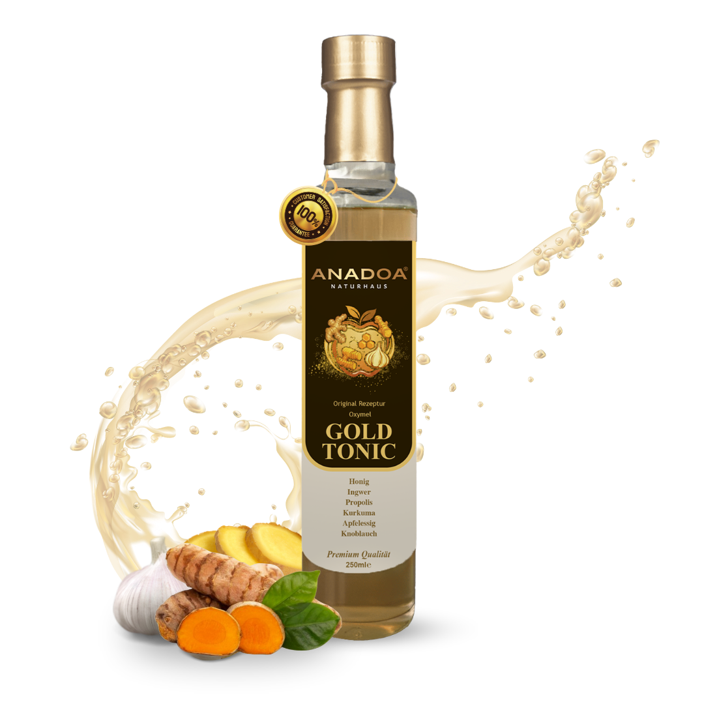

Entdecken Sie die jahrtausendealte Kraft des Oxymels in seiner edelsten Form. Unser Oxymel Gold Essig vereint naturtrüben Apfelessig, rohen Honig, Propolis, Kurkuma, Ingwer und Knoblauch zu einem unvergleichlichen Immun-Tonikum.
Was ist Oxymel Gold Essig eigentlich?
Der Begriff Oxymel stammt aus dem antiken Griechenland (oxy = sauer, meli = Honig). Diese Mischung aus unpasteurisiertem Essig und rohem Honig galt bereits bei Hippokrates als das bedeutendste Heilmittel zur Stärkung der Abwehrkräfte. Unser Oxymel Gold Essig greift diese Tradition auf. Der Honig im Oxymel Gold Essig mildert die extreme Säure des Essigs, während der Essig die Süße ausgleicht. Zusammen ergeben sie eine enzymreiche Basis, die den Körper tiefgreifend nährt.
Die Rezeptur: Warum "Gold" im Oxymel Gold Essig?
Unser Oxymel Gold Essig geht weit über die klassische Basisrezeptur hinaus. Wir extrahieren in diesem Sauerhonig vier der stärksten Naturstoffe der Erde, die ihn zum Oxymel Gold Essig machen:
- Propolis: Das natürliche Antibiotikum der Bienen bereichert unseren Oxymel Gold Essig mit Harzen und Flavonoiden.
- Kurkuma: Das goldene Gewürz gibt dem Oxymel Gold Essig seinen Namen. Sein Curcumin ist stark entzündungshemmend.
- Ingwer: Wärmt von innen und fördert im Oxymel Gold Essig die Durchblutung.
- Knoblauch: Ein traditionelles Hausmittel, dessen scharfes Aroma durch die Mazeration im Oxymel Gold Essig wunderbar abgemildert wird.
Ein Meisterwerk der Mazeration im Oxymel Gold Essig
Die Wirkstoffe von Propolis, Kurkuma und Ingwer lassen sich besonders gut in einer leicht sauren, zuckerhaltigen Lösung ausziehen. Die Kombination der lebenden Essigmutter und dem rohen Honig in unserem Oxymel Gold Essig bricht die Zellstrukturen der Gewürze auf und macht sie für den menschlichen Körper hoch bioverfügbar. Das Ergebnis ist der Oxymel Gold Essig, der sofort ins Blut geht.
Die Wirkung des Oxymel Gold Essigs auf Körper und Geist
Oxymel Gold Essig ist mehr als nur ein Hausmittel. Der Oxymel Gold Essig ist ein täglicher Begleiter für einen bewussten Lebensstil. Er unterstützt auf natürliche Weise die innere Balance, wärmt bei Kälte von innen, bringt den Stoffwechsel in Schwung und liefert eine spürbare Vitalität.
Anwendung und Dosierung des Oxymel Gold Essigs
Unser Oxymel Gold Essig kann sehr vielseitig eingesetzt werden:
- Oxymel Gold Essig als Immun-Booster: Täglich 1–2 Esslöffel in ein Glas Wasser mischen. Vor Gebrauch die Flasche des Oxymel Gold Essigs unbedingt gut schütteln.
- Oxymel Gold Essig pur als Shot: Bei ersten Anzeichen von Kratzen im Hals kann ein Teelöffel Oxymel Gold Essig pur langsam eingenommen werden.
- Kulinarisch: Der Oxymel Gold Essig eignet sich hervorragend als würzig-süßes Extra in Salatdressings.
Premium-Qualität ohne Kompromisse beim Oxymel Gold Essig
Bei Anadoa Naturhaus setzen wir beim Oxymel Gold Essig konsequent auf natürliche Reinheit. Unser Oxymel Gold Essig ist frei von künstlichen Aromen, Farbstoffen oder industriell hergestellten Konservierungsmitteln. Es ist ein reines, lebendiges Naturprodukt.
Häufig gestellte Fragen (FAQ)
Was ist der Unterschied zwischen Oxymel Gold und normalem Apfelessig?
Während Apfelessig rein sauer ist, ist Oxymel Gold eine traditionelle Mixtur aus Apfelessig und rohem Honig. Zusätzlich haben wir dieses Elixier mit Propolis, Kurkuma und Ingwer mazeriert, was es zu einem süß-sauren, hochpotenten Immun-Tonikum macht.
Wie nehme ich das Oxymel Gold Essig Elixier ein?
Trinken Sie täglich 1 bis 2 Esslöffel gemischt in einem Glas Wasser. Bei akutem Bedarf (z.B. bei Kältegefühl oder leichtem Halskratzen) können Sie auch einen Teelöffel pur und langsam auf der Zunge zergehen lassen.
Ist Oxymel Gold Essig für Kinder geeignet?
Da es rohen Honig und Propolis enthält, ist es für Kleinkinder unter 1 Jahr nicht geeignet. Für ältere Kinder ist es, verdünnt mit ausreichend Wasser oder Saft, ein hervorragendes, natürliches Stärkungsmittel für die kalte Jahreszeit.
Wann sollte ich Oxymel Gold Essig am besten trinken?
Besonders in der kalten Jahreszeit oder bei ersten Anzeichen von Erschöpfung ist ein Glas Oxymel Gold am Morgen auf nüchternen Magen der perfekte Kraftspender für den Start in den Tag.
Ist Oxymel Gold Essig vegan?
Nein, da unser Oxymel Gold echten, rohen Bienenhonig sowie Propolis direkt aus dem Bienenstock enthält, ist dieses Elixier vegetarisch, aber nicht vegan.